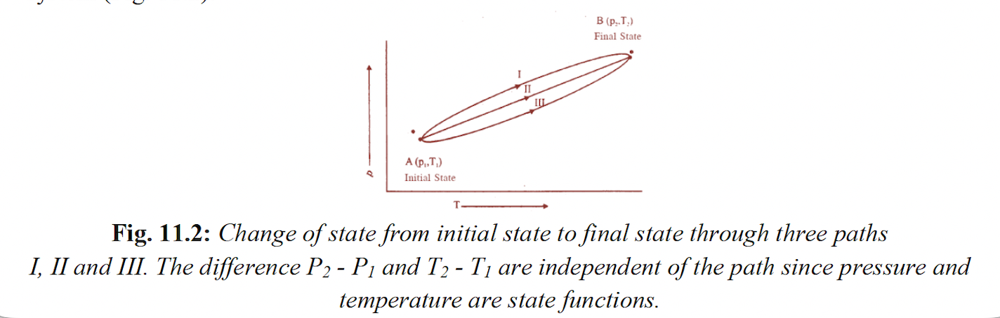
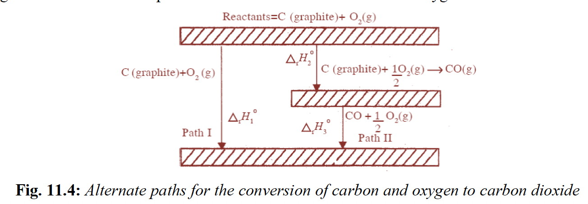
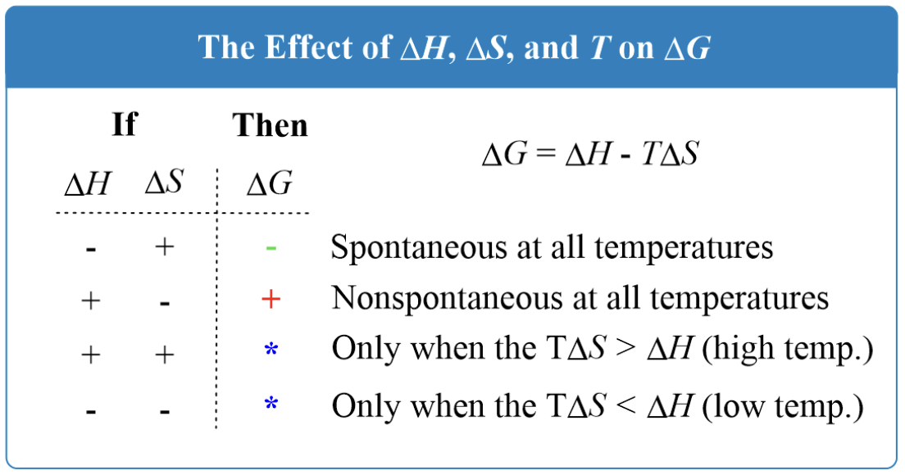

Δng = moles of gaseous products − moles of
gaseous reactants
ν = stoichiometric coefficient
Work: most-tested formulas
For reversible isothermal expansion/compression of an ideal gas,
the standard formula is
w = -nRT ln(V2/V1) = -nRT
ln(P1/P2) = -2.303 nRT
log(V2/V1); for expansion, work is negative in chemistry sign convention.
Same formula can be used in reverse too: if w is
given and T is asked, rearrange directly instead of
starting from scratch.
For irreversible expansion/compression against constant external
pressure, do not use the logarithm formula; use
w = -PextΔV.
For gas generated at constant external pressure, use
PΔV = ΔngRT, so expansion work often
becomes w = -ΔngRT.
When R = 0.0821 L atm mol-1 K-1, answer comes in L·atm; convert later only if the question wants
joules.
P–V path and process traps
On a P–V diagram, work is the area under the curve,
so work is a path function; for the same initial and final states,
different paths can give different work.
ΔU is a state function, so for the same initial and
final states it remains the same even when work changes from path
to path.
Reversible process means the system passes through equilibrium
states and can be reversed by an infinitesimal change; exact phase
changes at boiling/melting point are standard reversible examples.
Free expansion into vacuum is irreversible; neutralisation is also
a standard irreversible process.

Enthalpy, internal energy and heat capacity
At constant pressure, remember the direct link
qp = ΔH = nCpΔT; this is one of
the most repeated thermodynamics shortcuts in PYQs.
At constant volume,
qv = ΔU = nCvΔT.
For gaseous reactions, convert using
ΔH = ΔU + ΔngRT; count only gaseous moles
in Δng.
If there is no gaseous mole change, especially in condensed-phase
changes, then Δng = 0 and hence
ΔH = ΔU.
Must-remember relation for ideal gases:
Cp - Cv = R.
Standard enthalpy of formation and reaction
ΔfH° is for formation of
1 mol of a compound from its elements in standard
states; if the balanced equation forms 2 mol, multiply by 2.
Golden identity:
ΔrH° = ΣνΔfH°(products) −
ΣνΔfH°(reactants).
Elements in their standard states have
ΔfH° = 0; for carbon, standard state is
graphite, not diamond or fullerene.
For allotropes, the more stable form has lower
ΔfH°; for carbon the order is fullerene
> diamond > graphite.
When a decomposition or unknown-formation question appears, plug
known values carefully into the same products-minus-reactants
identity and solve the unknown.
Hess’s law: recurring PYQ patterns
Core idea: when a target reaction is not direct,
add/subtract/reverse known thermochemical equations algebraically;
if you reverse an equation, the sign of ΔH changes.
High-yield pattern 1: build the target by cancelling common
species and sum the adjusted enthalpy values only after the
equations are adjusted correctly.
High-yield pattern 2: when ΔfH° is asked
from combustion data, add combustion enthalpies of the constituent
elements to reach the same combustion products, then subtract
combustion enthalpy of the compound.
High-yield pattern 3: standard combustion enthalpy can also be
obtained from formation enthalpies using the same
products-minus-reactants logic.
Most common pitfall: doing the arithmetic before
reversing/multiplying equations, or forgetting that coefficients
and ΔH must be changed together.

Gibbs energy, equilibrium and spontaneity
Standard relation to remember exactly:
ΔG° = -RT ln K = -2.303 RT log K.
Quick inference: ΔG° < 0 ⇒ K > 1,
ΔG° > 0 ⇒ K < 1.
For temperature-dependent spontaneity, use
ΔG = ΔH - TΔS; the boundary temperature comes from
ΔG = 0, so T = ΔH/ΔS.
If both ΔH and ΔS are positive, high
temperature favours spontaneity; if both are negative, low
temperature favours spontaneity.
In mixed thermodynamics questions, first convert
ΔU to ΔH using
ΔH = ΔU + ΔngRT, then apply
ΔG = ΔH - TΔS.
Main pitfall: use consistent units before applying
T = ΔH/ΔS; typically convert ΔH from kJ
to J if ΔS is in J K-1 mol-1.
Bond enthalpy and bond-count method
For gaseous reactions, use
ΔH ≈ Σ(bond enthalpies of bonds broken) − Σ(bond enthalpies of
bonds formed).
Practical exam method: first write/visualise the structural
formula, then count only the bonds actually broken and formed.
This is especially useful when direct calorimetric data are not
available.
Main pitfall: counting all bonds present on both sides instead of
only the bonds that change.
Small but repeated concept checks
Intensive properties are independent of amount; extensive
properties depend on amount.
Pure solids and pure liquids are omitted from equilibrium
expressions; only gaseous or solute species appear.
A catalyst changes rate only; it does not change ΔH,
K or equilibrium position.
For adiabatic change, PVγ = constant; in
differential form, dP/P = -γ dV/V.
Last-minute pitfalls and exam moves
First identify the process: reversible isothermal, irreversible
against constant external pressure, constant pressure heating,
constant volume heating, Hess’s law, or Gibbs-equilibrium type.
Do not mix up qp with
qv; at constant pressure use enthalpy, at constant volume use
internal energy.
Do not count solids/liquids in Δng or in
equilibrium expressions.
Do not forget standard-state exceptions: elemental standard states
have zero formation enthalpy, and graphite is the standard state
of carbon.
If an equation is reversed, sign changes; if an equation is
multiplied, ΔH also multiplies; if coefficients are
wrong, the whole answer drifts.
July 20 Shift 2, Question 131
— Bond enthalpies of \(D-D\), \(O=O\), \(D-O\); find \(\Delta
H^\circ\) of \(D_2O\) formation.
Variables
P = pressure
V = volume
T = absolute temperature
q = heat
w = work
U = internal energy
H = enthalpy
S = entropy
G = Gibbs energy
Cp = heat capacity at constant pressure
Cv = heat capacity at constant volume
R = gas constant
K = equilibrium constant
Basic thermodynamic language
System = the part under study; surroundings = everything else.
Open system exchanges both matter and energy, closed system
exchanges only energy, isolated system exchanges neither.
State of a system is described by measurable variables such as
pressure (P), volume (V) and temperature
(T). A state function is a property whose value
depends only on the initial and final state, not on the path used
to reach there.
Extensive properties depend on amount of substance, such as mass,
volume, internal energy and enthalpy. Intensive properties do not
depend on amount, such as temperature, pressure and density.
Standard state means 1 bar pressure at a specified temperature,
with each substance in its most stable form. This matters whenever
standard enthalpy or standard Gibbs energy is used.
Thermodynamic processes
Isothermal process: temperature (T) remains constant.
Adiabatic process: no heat exchange, so q = 0, where
q means heat exchanged by the system. Reversible
process: proceeds through equilibrium states and can be reversed
by an infinitesimal change. Irreversible process: occurs through a
finite imbalance and cannot be exactly reversed through
equilibrium states.
For exams, the most important reversible examples are phase
changes exactly at the transition temperature and very slow piston
expansion/compression. Free expansion into vacuum is the standard
irreversible example.
On a pressure-volume or P–V diagram, work depends on
path and equals the area under the curve. Internal energy change
does not depend on path if the initial and final states are the
same.
Heat, work and first law
First law of thermodynamics: energy is conserved. In chemistry
sign convention, ΔU = q + w. Here
ΔU means change in internal energy,
q means heat absorbed by the system, and
w means work done on the system.
Internal energy (U) is the total energy contained in
the system. It is a state function. Heat (q) and work
(w) are path functions, so their values depend on how
the change is carried out.
Expansion work at constant external pressure is
w = -PextΔV. Here
Pext means external pressure and
ΔV means final volume minus initial volume. Expansion
gives negative work; compression gives positive work.
At constant volume, ΔV = 0, so
qv = ΔU. Here
qv means heat exchanged at constant
volume.
Enthalpy, heat capacities and the ΔH–ΔU link
Enthalpy is defined as H = U + PV. Here
H means enthalpy, U means internal
energy, P means pressure and V means
volume. At constant pressure, ΔH = qp, where qp means heat exchanged at
constant pressure.
For ideal-gas heating at constant pressure,
qp = nCpΔT = ΔH. Here
n means number of moles,
Cp means molar heat capacity at constant
pressure, and ΔT means change in temperature.
At constant volume, heating follows
qv = nCvΔT = ΔU. Here
Cv means molar heat capacity at constant
volume.
So the difference is: Cp tells how much
heat is needed to raise the temperature of 1 mole of substance by
1 K at constant pressure, while Cv tells
the same thing at constant volume.
For ideal gases, remember the standard relation
Cp - Cv = R, where
R is the universal gas constant.
For gaseous reactions, ΔH = ΔU + ΔngRT.
Here Δng means change in number of moles
of gases = gaseous products minus gaseous reactants,
R is the gas constant, and T is absolute
temperature in kelvin.
For solids and liquids, the difference between ΔH and
ΔU is usually negligible because volume change is
small.
Calorimetry is the measurement of heat changes. At this level, the
key exam idea is: constant-pressure calorimetry gives
ΔH, constant-volume calorimetry gives
ΔU.
Thermochemical equations
A thermochemical equation must include the balanced chemical
equation, physical states of reactants and products, and the
enthalpy change ΔH.
Exothermic reactions have ΔH < 0, meaning heat is
released. Endothermic reactions have ΔH > 0,
meaning heat is absorbed.
Physical state matters because enthalpy depends on whether a
substance is solid, liquid, gas or aqueous.
If the whole equation is multiplied by a number, the
ΔH value is multiplied by the same number. If the
equation is reversed, the sign of ΔH changes.
Standard enthalpies and reaction enthalpy
Standard enthalpy of reaction, ΔrH°, means
enthalpy change of a reaction when reactants and products are in
standard states. The subscript r stands for reaction
and the superscript ° stands for standard state.
Standard enthalpy of formation, ΔfH°,
means enthalpy change when 1 mole of a compound is formed from its
elements in their most stable standard states. The subscript
f stands for formation.
Any element in its standard state has
ΔfH° = 0. For carbon, the standard state
is graphite, not diamond.
Standard enthalpy of combustion, ΔcH°,
means heat evolved when 1 mole of a substance burns completely in
oxygen. The subscript c stands for combustion.
Standard enthalpy of neutralisation means the heat evolved when 1
mole of H+ reacts with 1 mole of
OH- to form water. For strong acid and
strong base, this is nearly constant.
The most-used identity is
ΔrH° = ΣνΔfH°(products) -
ΣνΔfH°(reactants). Here Σ means sum, and ν means
stoichiometric coefficient from the balanced equation.
Hess’s law and high-yield calculation patterns
Hess’s law says that enthalpy change depends only on the initial
and final states, not on the route. So thermochemical equations
can be added, subtracted, reversed or multiplied like algebra to
obtain a target reaction.
When a target reaction cannot be measured directly, build it from
known reactions by cancelling common species. This is one of the
most repeated PYQ patterns.
For formation enthalpy from combustion data, the common shortcut
is: add the combustion enthalpies of the constituent elements to
the same final combustion products, then subtract the combustion
enthalpy of the compound.
For reaction enthalpy from formation data, always do products
minus reactants, keeping stoichiometric coefficients carefully.
Most mistakes come from sign errors or missing coefficients.
Bond enthalpy method
Chemical reactions involve bond breaking and bond formation.
Breaking bonds absorbs energy; forming bonds releases energy.
For gaseous reactions, estimate reaction enthalpy using
ΔH ≈ Σ(bond enthalpies of bonds broken) - Σ(bond enthalpies of
bonds formed).
Bond dissociation enthalpy means energy needed to break a
particular bond in a particular gaseous molecule. Bond enthalpy
means the average value for that type of bond across molecules.
For polyatomic molecules, these are not exactly the same.
In exam problems, first draw structural formulas, list bonds
broken and bonds formed, then substitute bond enthalpy values.
This avoids most counting mistakes.
Spontaneity, entropy and Gibbs energy
Decrease in enthalpy alone is not enough to decide spontaneity.
Entropy must also be considered.
Entropy (S) is a measure of disorder or dispersal of
energy. In general, gases have higher entropy than liquids, and
liquids have higher entropy than solids.
The deciding relation is ΔG = ΔH - TΔS. Here
G means Gibbs energy, ΔG means change in
Gibbs energy, ΔH means enthalpy change,
T means absolute temperature in kelvin, and
ΔS means entropy change.
At constant temperature and pressure: ΔG < 0 means
spontaneous, ΔG > 0 means non-spontaneous, and
ΔG = 0 means equilibrium.
Temperature-dependent spontaneity is very important: if both
ΔH and ΔS are positive, high temperature
favours spontaneity; if both are negative, low temperature favours
spontaneity.
The boundary temperature comes from ΔG = 0, so
T = ΔH/ΔS, provided the units of ΔH and
ΔS are made consistent.
The standard relation
ΔG° = -RT ln K = -2.303 RT log K links Gibbs energy
to equilibrium. Here K is the equilibrium constant,
ln means natural logarithm and log means
logarithm base 10.
So ΔG° < 0 means K > 1, and
ΔG° > 0 means K < 1.

Third law and absolute entropy
Third law: the entropy of a pure, perfectly crystalline substance
is zero at absolute zero.
This gives a reference point for assigning absolute entropy
values.
For quick revision, the main thing to remember is the statement of
the law and its connection to absolute entropy; the detailed
low-temperature heat-capacity treatment is low priority for
EAPCET-style revision.
Last-minute exam focus
Most scoring numericals in this chapter come from a small set of
moves: classify state vs path functions, use
w = -PextΔV, use reversible isothermal
work formula for ideal gas, use ΔH = qp, use ΔH = ΔU + ΔngRT, use products minus
reactants for formation enthalpies, and use Hess’s law algebra.
For concept questions, remember: reversible means infinitesimal
change plus equilibrium throughout; pure solids and liquids are
omitted from equilibrium expressions; a catalyst changes only the
rate, not ΔH, ΔG° or equilibrium
constant.
Common traps: forgetting physical states, using the
ln work formula for irreversible work, counting
non-gaseous moles in Δng, missing stoichiometric coefficients in enthalpy sums, and
forgetting that standard-state elements have zero formation
enthalpy.
2025
Hess’s law: when a target reaction is not direct, algebraically
add/subtract known thermochemical equations (reverse ⇒ sign
changes) and cancel common species; here use combustion of CH₄ and
reverse formation of CO₂ to get CH₄ + O₂ → C + 2H₂O, so ΔH = −890
+ 394 = −496 kJ.
For 1 mol ideal gas in isothermal reversible
expansion/compression, remember
\(w=-nRT\ln\!\left(\frac{V_2}{V_1}\right)=-nRT\ln\!\left(\frac{P_1}{P_2}\right)=nRT\ln\!\left(\frac{P_2}{P_1}\right)\);
expansion gives negative work in chemistry sign convention.
Standard Gibbs relation: \(\Delta G^\circ=-RT\ln
K=-2.303\,RT\log_{10}K\); hence \(\Delta G^\circ<0 \Rightarrow
K>1\) and at 298 K, \(\log_{10}K=\dfrac{-\Delta
G^\circ}{2.303RT}\).
Reversible process criterion: it must proceed through equilibrium
and be reversible by an infinitesimal change in conditions; hence
phase changes at exact transition temperature (boiling/melting
point) are reversible, while free expansion into vacuum and
neutralisation are irreversible.
For temperature-dependent spontaneity, use \(\Delta G=\Delta
H-T\Delta S\); the direction changes at equilibrium where \(\Delta
G=0\), so \(T=\frac{\Delta H}{\Delta S}\) (use consistent units),
and above/below this temperature decide spontaneity from the signs
of \(\Delta H\) and \(\Delta S\).
At constant pressure, remember the direct result \(q_p=nC_p\Delta
T\) and \(\Delta H=q_p=nC_p\Delta T\); this is a standard
high-yield link between heat absorbed and enthalpy change for
ideal-gas processes at constant pressure.
2024
Standard enthalpy of formation is for formation of 1 mol of
compound from its elements in standard states; so if the balanced
reaction forms 2 mol NH₃, then \(\Delta_r H^\circ = 2\,\Delta_f
H^\circ(\mathrm{NH_3}) = 2(-46.2) = -92.4\ \text{kJ}\).
For isothermal reversible expansion, the same standard formula
applies in any convenient unit system:
\(w=-nRT\ln\!\left(\frac{V_2}{V_1}\right)=-2.303\,nRT\log_{10}\!\left(\frac{V_2}{V_1}\right)\);
if \(R=0.0821\ \text{L atm mol}^{-1}\text{K}^{-1}\), the answer
comes directly in L·atm.
High-yield Hess’s law pattern: when \(\Delta_f H^\circ\) is asked
from combustion data, add combustion enthalpies of the constituent
elements to form the same combustion products, then subtract
combustion enthalpy of the compound; for methanol, \(\Delta_f
H^\circ=\Delta_c H^\circ(\text{C})+2\Delta_c
H^\circ(\text{H}_2)-\Delta_c H^\circ(\text{CH}_3\text{OH})\).
Use the formation-enthalpy identity directly: \(\Delta_r
H^\circ=\sum \Delta_f H^\circ(\text{products})-\sum \Delta_f
H^\circ(\text{reactants})\); for decomposition questions, plug in
known values and solve the unknown \(\Delta_f H^\circ\).
For irreversible expansion/compression against constant external
pressure, use \(w=-P_{\text{ext}}\Delta V\) (not the \(\ln\)
formula); in isothermal ideal-gas questions, first get \(V\) from
\(PV=nRT\), then convert L·atm to J if needed.
2023
For isothermal reversible ideal-gas expansion, if work is given
and temperature is asked, rearrange
\(w=-nRT\ln\!\left(\frac{V_2}{V_1}\right)\) to
\(T=\dfrac{-w}{nR\ln(V_2/V_1)}\); this is the standard reverse-use
of the same formula.
For reaction enthalpy from standard enthalpies of formation, use
\(\Delta_r H^\circ=\sum \nu \Delta_f H^\circ(\text{products})-\sum
\nu \Delta_f H^\circ(\text{reactants})\); any element in its
standard state has \(\Delta_f H^\circ=0\).
Standard combustion enthalpy can be obtained by Hess’s law from
formation enthalpies: for \( \mathrm{CO+\tfrac12 O_2 \rightarrow
CO_2} \), \(\Delta_c H^\circ=\Delta_f
H^\circ(\mathrm{CO_2})-\Delta_f H^\circ(\mathrm{CO})\).
Must-remember classification: intensive properties are independent
of amount of substance (e.g. temperature, density, molar volume),
while extensive properties depend on amount (e.g. mass, volume,
internal energy, enthalpy).
For gas-phase reactions, first convert \(\Delta U\) to \(\Delta
H\) using \(\Delta H=\Delta U+\Delta n_gRT\), then apply \(\Delta
G=\Delta H-T\Delta S\); remember \(\Delta n_g\) counts only
gaseous moles.
For reversible isothermal ideal-gas expansion written in terms of
pressure, use
\(w=-nRT\ln\!\left(\frac{P_1}{P_2}\right)=-2.303\,nRT\log_{10}\!\left(\frac{P_1}{P_2}\right)\);
for a tenfold pressure drop, \(\log_{10}(10)=1\), which makes the
calculation very fast.
2022
For reactions generating gas at constant external pressure,
expansion work is found from \(w=-P_{\text{ext}}\Delta V\), and
for ideal gases use \(P\Delta V=\Delta n_gRT\), so \(w=-\Delta
n_gRT\) when gas is produced from zero initial gas volume.
In equilibrium expressions, pure solids and pure liquids are
omitted (activity = 1), so for \(A(s)\rightleftharpoons
B(s)+C(g)\), \(K\) depends only on gaseous species (\(K_p=p_C\));
also, a catalyst does not change \(\Delta H\) or \(K\), only the
rate.
On a \(P\)-\(V\) diagram, work is a path function equal to the
area under the curve \(\left(w=-\int P\,dV\right)\); for the same
initial and final states, the higher path gives larger magnitude
of work, while \(\Delta U\) remains the same for all paths because
it is a state function.
Must-remember fact: \(\Delta_f H^\circ = 0\) for any element in
its standard state; for carbon, the standard state is graphite
(not diamond or fullerene).
Hess’s law method: manipulate given equations by
reversing/multiplying as needed so unwanted species cancel; the
target \(\Delta H\) is the algebraic sum of the adjusted enthalpy
values.
For adiabatic changes, \(PV^\gamma=\text{constant}\); in
differential/percentage form,
\(\frac{dP}{P}=-\gamma\,\frac{dV}{V}\), so pressure and volume
change in opposite directions and \(\%\Delta P=\gamma\,\%\Delta
V\) in magnitude for small changes.
Use \(\Delta H=\Delta U+\Delta n_gRT\); for phase changes
involving only condensed phases (no gaseous mole change), \(\Delta
n_g=0\), so \(\Delta H=\Delta U\).
For allotropes, more stable form has lower \(\Delta_f H^\circ\);
carbon’s standard state is graphite, so \(\Delta_f H^\circ\) order
is fullerene \(>\) diamond \(>\) graphite.
Bond-enthalpy method: \(\Delta H \approx \sum(\text{bond
enthalpies of bonds broken})-\sum(\text{bond enthalpies of bonds
formed})\); for water/heavy water formation, break \(
\mathrm{H\!-\!H/D\!-\!D} \) and \( \tfrac12\mathrm{O{=}O} \), then
form two \( \mathrm{O\!-\!H/O\!-\!D} \) bonds.